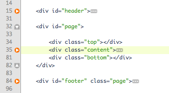

Created: 10/20/2010
By: Eric Alli
Email: info@two2twelve.com
Thank you for purchasing my theme. If you have any questions that are beyond the scope of this help file, please feel free to email via my user page contact form here. Thanks so much!
FreshServe consists of 7-pages in total with a fixed layout. Here is the general HTML structure for each page:

The div with the id of "header" contains the logo and main navigation for the site.
Within the div with the id of "page" there are 3 sub-divs with the classes of "top", "content" and "bottom". The divs "top" and "bottom" add the rounded corner look to the theme and contain no content within them.
The content for the page is wrapped in a div with the class of "content" and also has the ID of the page name.
If you would like to edit the color, font, or style of any elements in a given page, you can do this by locating the specific CSS section for that page in the "styles.css" file. In the next section I'll explain how the sections in the CSS stylesheet are organized.
There is one CSS stylesheet in this theme which contains all of the specific stylings for the theme and is located in the stylesheets/ folder.
The file is separated into sections using:
/*-------------------------------------------- Section Name ---------------------------------------------*/ some code /*-------------------------------------------- Section Name ---------------------------------------------*/ some code
For every section and page in the HTML files there is a corresponding CSS section. To update the CSS for any area of the theme, simply look for the containing div for that area, then look for the commented CSS section with that same name.
This theme imports six Javascript files in total (though, not all six are included on every page).
More specifically, the Site (site.js) Javascript file adds the CSS3 properties, border-radius and text-shadow to a few areas of the theme in addition to activating the other aforementioned libraries. Lastly, towards the bottom the the site.js file, is the code for the ajax-powered contact form.
I've included several fully sliced PSD's (located in the PSD's folder) making it easy to find and update nearly every image used within the theme.
If you'd like to change any images within the theme, follow these simple steps:
In addition to the full page PSD's included, I've also included several separate PSD's of the main theme elements so they may be easily updated. These include:
Repeat these steps for any of the other images you wish to edit.
I've used the following fonts and icons as listed.
This theme uses a simple PHP mailer script for the contact form.
In the /scripts/ folder of the theme you should see a file called "send_mail.php". This file is used for submitting the contents of the contact form from the "Contact" page and emailing the contents to your specified email address.
To specify an email address for the form to submit to:
Open the "send_mail.php" file with any text editor. Find the following lines and replace these areas with your information.
$site_owners_email = 'you@yourdomain.com'; // Replace this with your own email address $site_owners_name = 'Your Name'; // Replace with your name $mail->Mailer = "smtp"; $mail->Host = "mail.yourdomain.com"; // Your mail server $mail->Port = 25; $mail->SMTPAuth = true; // Enable SMTP authentication $mail->Username = "you@yourdomain.com"; // Your SMTP username $mail->Password = "yourpassword"; // Your SMTP password
You can use your own mail server details here, or a mail server such as gmail.
FreshServe features 8 color variations in sub-folders labeled accordingly within the theme's HTML folder. Each of these folders contains the entire theme using the labeled color combination. Simply choose the color scheme you wish to use and start customizing!
The "Tour" page of FreshServe features an embeddable screencast. You can you use virtually any embeddable video including a Vimeo video (used in the demo), YouTube video, Quicktime or any Flash video. The size of the video should be around 900x500px if you like it to fill the page (as seen in the demo). The area where you'll need to paste your embed code is commented in the "tour.html" page.
Once again, thank you so much for purchasing this theme. As I said at the beginning, I'd be glad to help you if you have any questions relating to this theme. No guarantees, but I'll do my best to assist. If you have a more general question relating to the themes on ThemeForest, you might consider visiting the forums and asking your question in the "Item Discussion" section.
Eric Alli
http://from.two2twelve.com